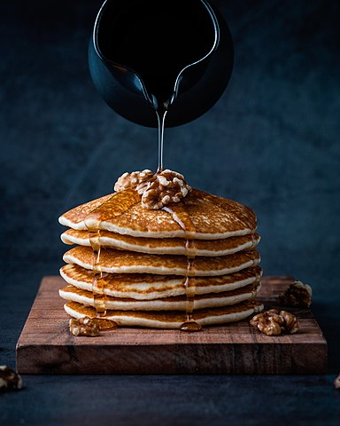

Pancakes

Time: 20 minutes
Ingredients:
- 2 cups all-purpose flour
- 1 tablespoon baking powder
- 1/2 teaspoon salt
- 1 tablespoon sugar
- 1 1/2 to 2 cups milk
- Preheat the griddle over medium-low heat.
- Mix together the dry ingredients. Beat the eggs into the milk.
Gently stir this into the dry mix.
- Ladle batter onto the griddle, let cook on one side for 2-4 minutes
until brown, then flip. When done, serve or hold on an ovenproof plate
in 200°F oven for up to 15 minutes.
Note: this is the most basic version. For a slight increase in complexity,
separate the eggs, mixing the yolks and milk into the dry mix, before whisking
the egg whites until stiff, then folding the whites into the batter.
Home